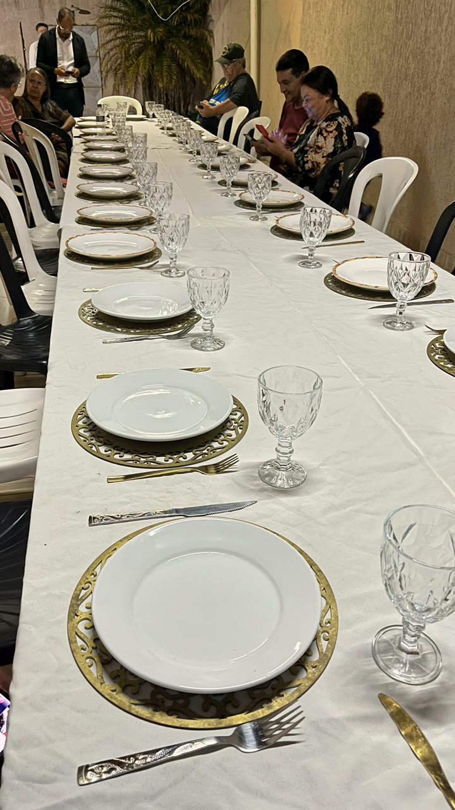
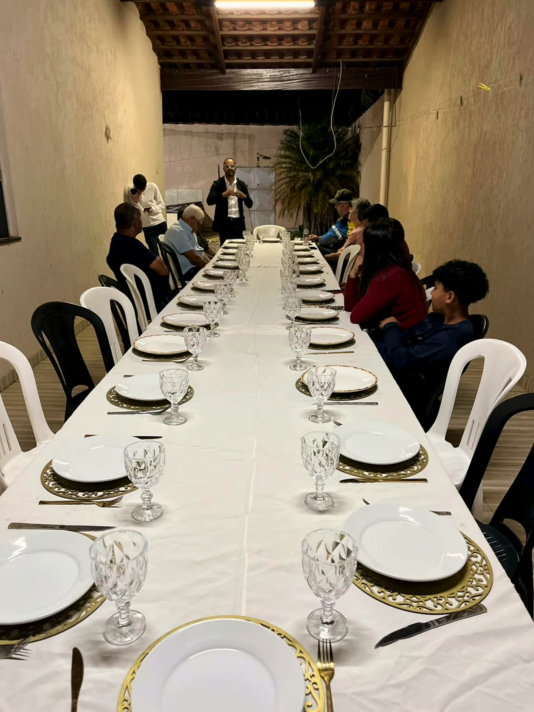
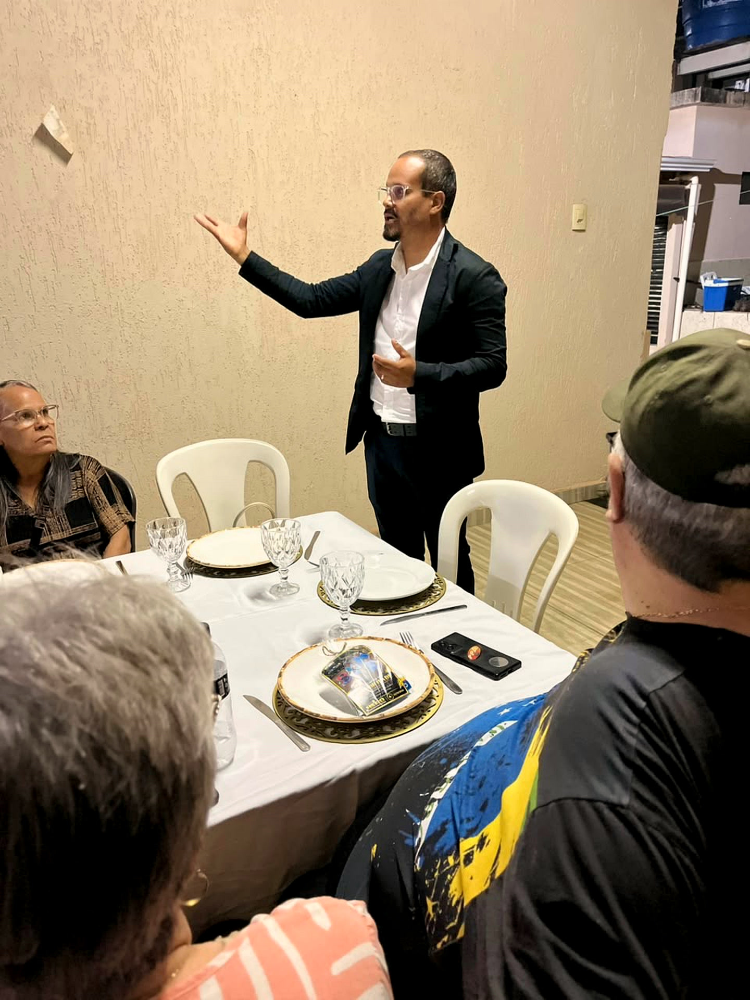
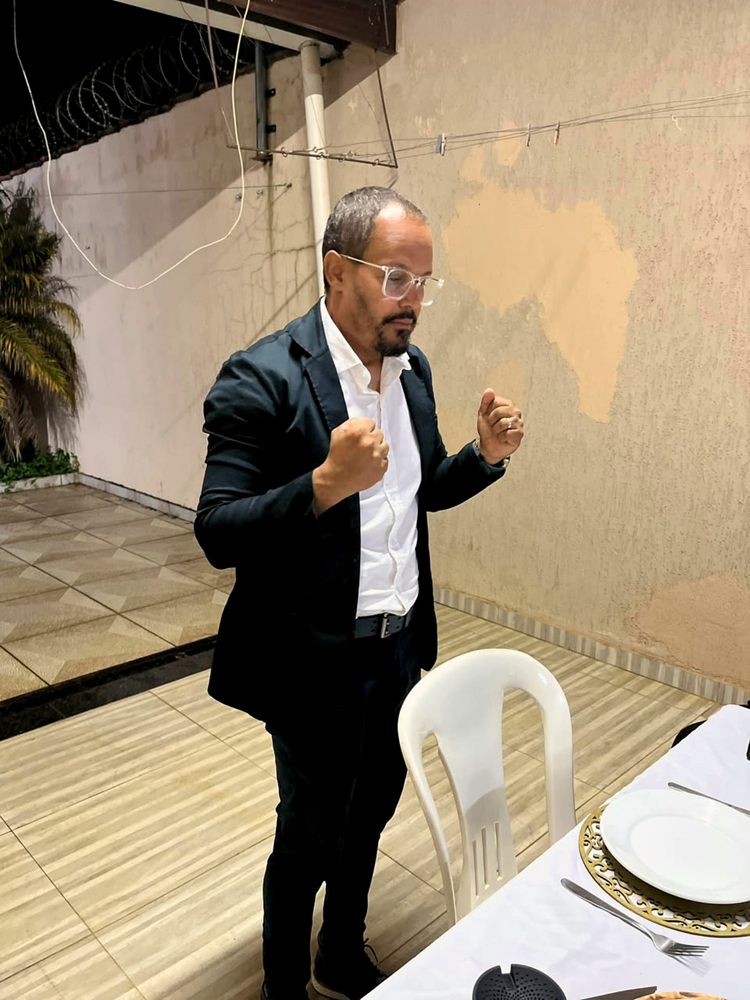
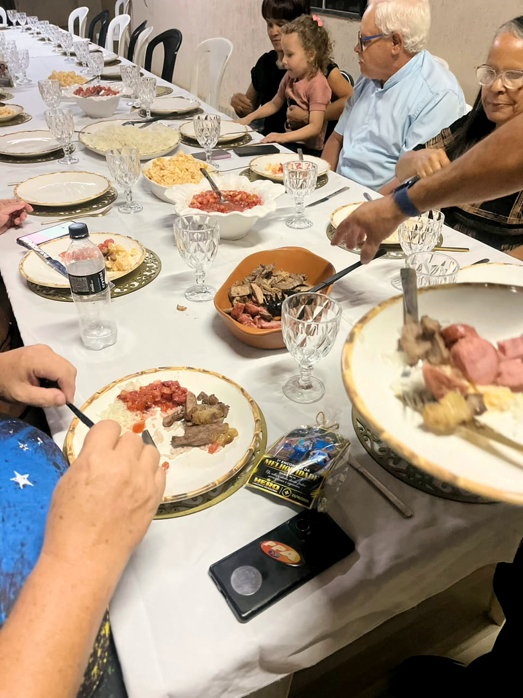
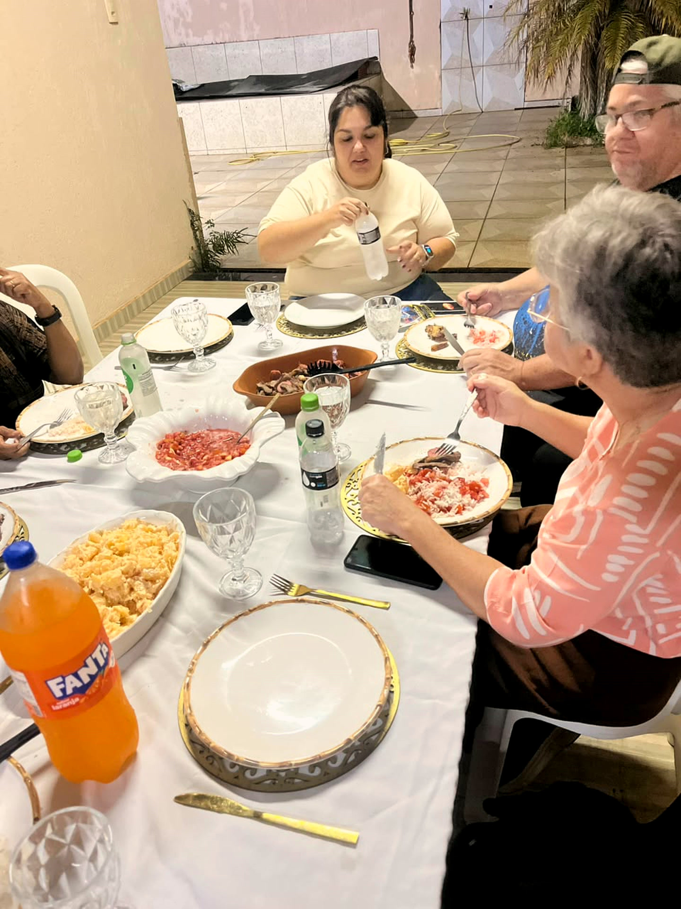
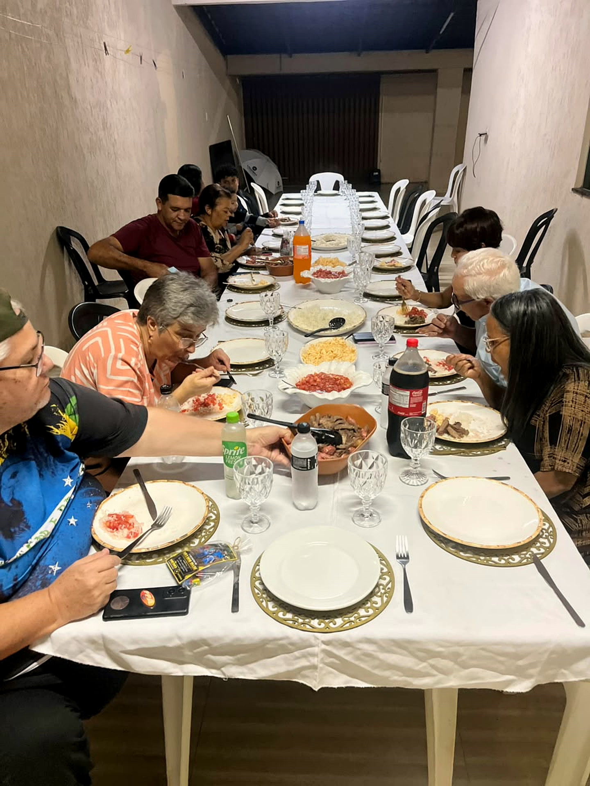
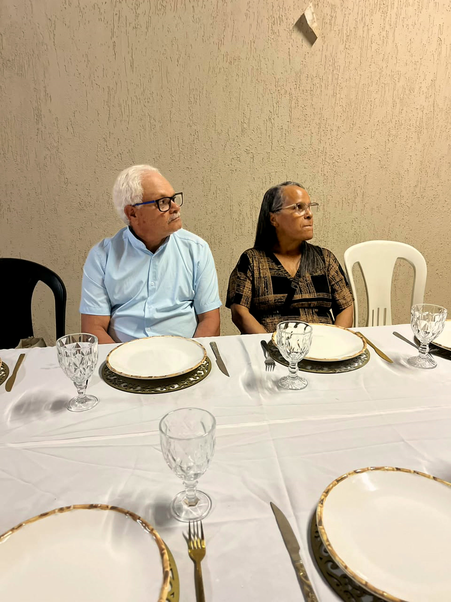
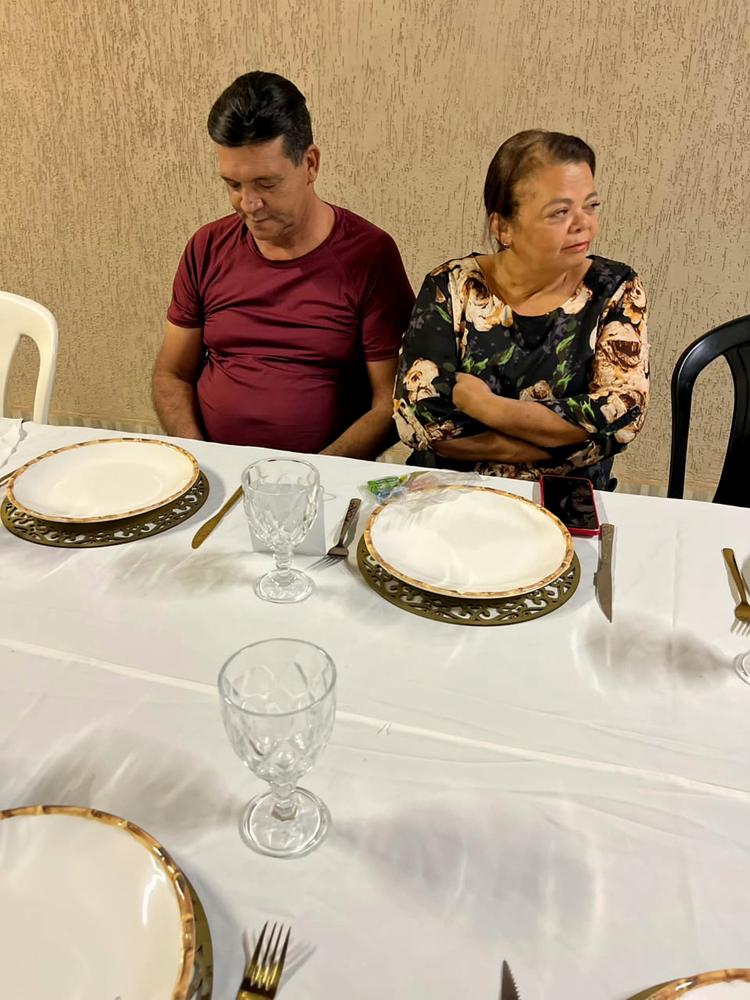
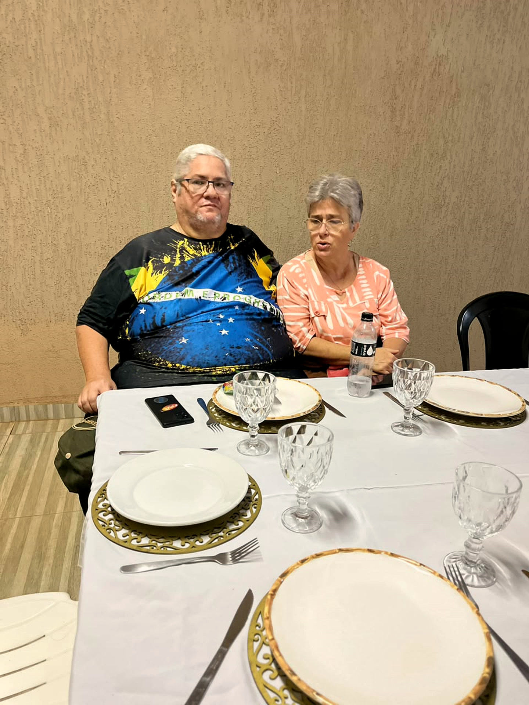
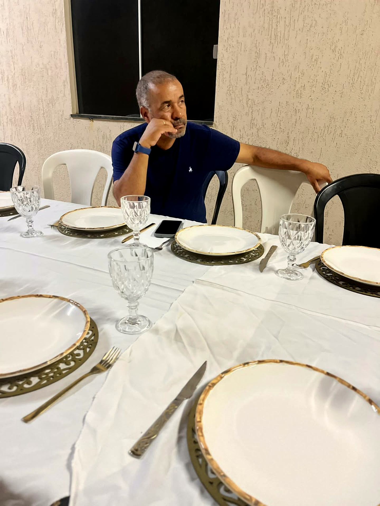
Obrigado
POR CADA HISTÓRIA
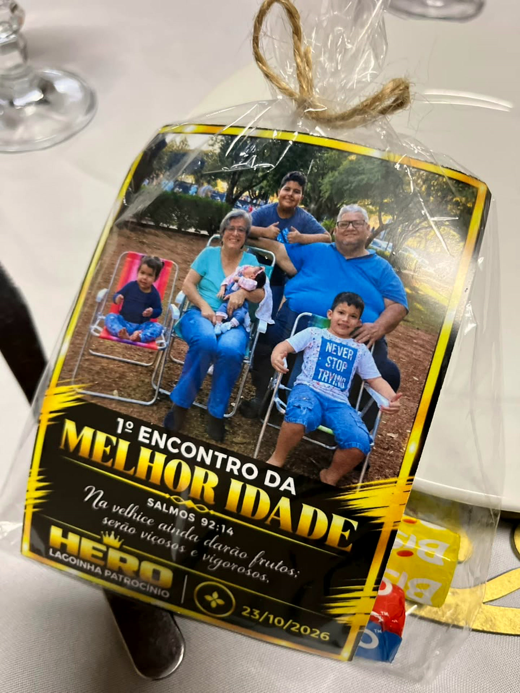
Noite da
MELHOR IDADE
LAGOINHA PATROCÍNIO • 23/10/2026
Preparado com carinho…
…para receber vocês.
SALMOS 92:14
Na velhice ainda
darão frutos;
darão frutos;
serão viçosos
e vigorosos.
e vigorosos.
Comunhão
À MESA, COMO FAMÍLIA
Gratidão
POR CADA ANO VIVIDO
“Na velhice ainda
darão frutos”
darão frutos”
Até o próximo encontro
1º Encontro da Melhor Idade
23 • 10 • 2026